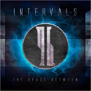
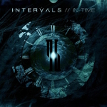
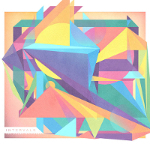
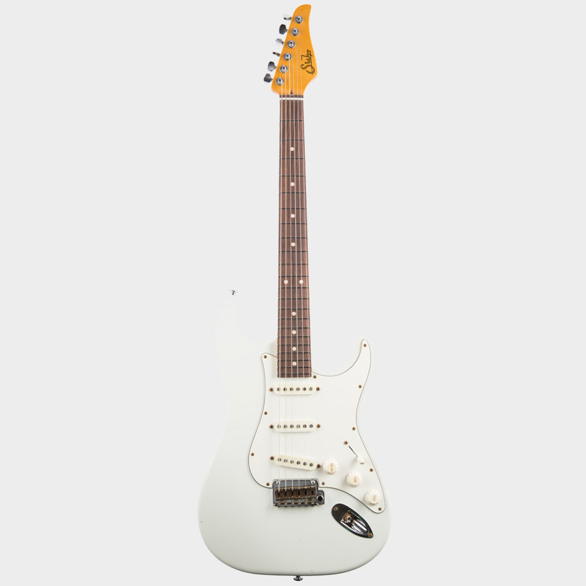
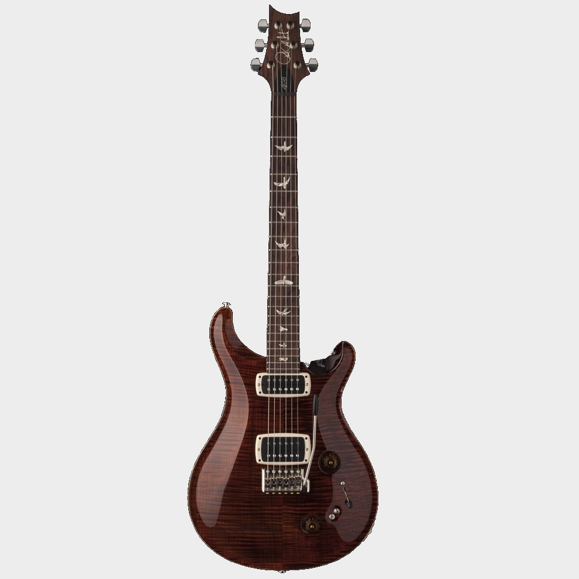

History
Formation and The Space Between [EP] (2011 – 2012)
Intervals was formed in Toronto, Ontario, Canada in 2011, as a creative outlet for guitarist Aaron Marshall after quitting his previous band, "Speak of the Devil". He recorded and programmed all the parts for The Space Between himself in his home studio; it was mixed and mastered by Adam "Nolly" Getgood of Periphery and released independently, on December 20, 2011. Marshall attempted to form a full band (including a vocalist), with the intention of turning Intervals into a touring act; but failed to do so.

In Time [EP] (2012 – 2013)

With the release of their 2nd EP In Time on October 30, 2012, Marshall was joined by Olly Steele (Monuments) and David Maxim Micic (Destiny Potato). This EP received a 4.0/Excellent rating via Sputnik Music and stated that the band were "a very talented instrumental progressive metal band." The band released a music video for "Epiphany" on April 25, 2013 via Guitar World promotion and YouTube. Following the success of In Time, the band gained endorsement deals from Ernie Ball Music Man, Pearl Drums, Meinl Cymbals, Toontrack, InTune Guitar Picks, and Gruv Gear. Marshall also released playthroughs and lessons for certain songs from the EP.
A Voice Within (2013 – 2015)
On September 14, 2013, Intervals announced they would be entering the studio with Jordan Valeriote (Silverstein, Structures, Counterparts) on November 4, 2013 to begin tracking their upcoming release. Following the studio, Intervals were scheduled to tour Europe (January - February 2014) with Protest The Hero, TesseracT, and The Safety Fire. On December 30, 2013, it was announced that bassist Mike Semesky would be changing his role in the band and provide vocals on the new album: as a result, the album's bass tracks were handled equally by Aaron and Jordan. The band released Semesky's vocal debut in the form of new single ‘Ephemeral’ via RevolverMag.com, as well as revealing that the new album would be titled A Voice Within. Due to the need for Semesky to focus entirely on his vocal performance live, the band hired Henry Selva (formerly of The Human Abstract) as live bassist for their upcoming tours. Semesky provided comments on the announcement:
"I'm extremely happy to announce that I am the singer of Intervals. I joined the band on bass in early 2013, but after writing and experimenting with vocals over demos of the band's new material, the four of us knew that that was the direction we were meant to go. I feel so blessed to be a part of such a talented group of musicians and I'm extremely proud of the album we all worked so hard on. We can't wait for you all to hear it!"
The band released a second song from the album, "The Escape", on January 23, 2014. They also announced that the album would be released on March 4, 2014. On 26 February, the band announced that they would be releasing one new song from the album per day until the day of the album's release; the first of these songs was "The Self Surrendered". On November 25, 2014, it was announced that Mike Semesky had left the band. An instrumental version of A Voice Within was released on Bandcamp on March 3, 2015.
The Shape of Colour (2015 – present)

On June 23, 2015, Lukas and Anup announced on Facebook that they are no longer a part of Intervals. This separation was caused by different expectations about the direction of Intervals (instrumental music or not). Aaron is currently the only member of the band, but the next album will feature Cameron McLellan (Protest The Hero) on bass guitar, and Travis Orbin (Darkest Hour, Periphery, Sky Eats Airplane) on drums. The album entitled The Shape of Colour was released in December 4, 2015.
Band members
Aaron Marshall
Current members
- Aaron Marshall - guitar (2011 – present)
Past members
- Matt De Luca - bass (2011 – 2012)
- Mike Semesky - vocals (2013 - 2014; live bass, 2013)
- Lukas Guyader - guitar (2011 – 2015)
- Anup Sastry - drums, percussion (2011 – 2015)
Live members
- Henry Selva - bass (2014)
- Plini Roessler-Holgate- guitar (2016 – present)
- Nathan Bulla - drums (2016 – present)
- Simon Grove - bass (2016 – present)
Aaron's guitar rig
Strandberg Boden OS6 tremolo

- Bolt-On construction
- Book-matched Flame Maple top
- Chambered Swamp Ash body
- EndurNeck™ profile neck
- 5-pc (3x) Birdseye Maple neck with Carbon Fiber/(2x) rosewood fillets
- Birdseye Maple fretboard
- 25.5” – 25” scale
- 20” radius
- 24 x stainless steel frets
- .strandberg* EGS Series 5 tremolo bridge and string locks, Black
- Seymour Duncan Jazz/JB pickups
- 5-way switch
- Ebony Volume/Tone controls
- Glow in the dark side dot markers
Suhr Classic Antique Surf Grey

- Bolt-On construction
- Even C Medium .840 - .920
- 2-piece Alder body
- Maple neck
- Nut Width 1.650"
- Maple fretboard
- 25.5” scale
- Suhr Locking Chrome Machines
- 22 Frets, Stainless Steel Medium, Compound Radius 9" - 12"
- Gotoh 510, Chrome Bridge
- Chrome Hardware
- 5 Way Blade, Volume, Tone, Tone
- Suhr ML Pickups
- Clay Dots
Prs 408 in Wine

- Carved Figured Maple Top
- Mahogany Body
- Mahogany Neck
- Pattern or Pattern Thin Neck Profile
- Rosewood fretboard
- Fretboard Bird Inlays
- 25” scale
- 22 Frets
- PRS Phase III Locking Tuners
- PRS Tremolo Bridge
- Nickel Hardware
- Volume, Tone, 3-Way Switch, Mini-Toggle Coil Taps
- 408 Pickups
- 10-Top Flame